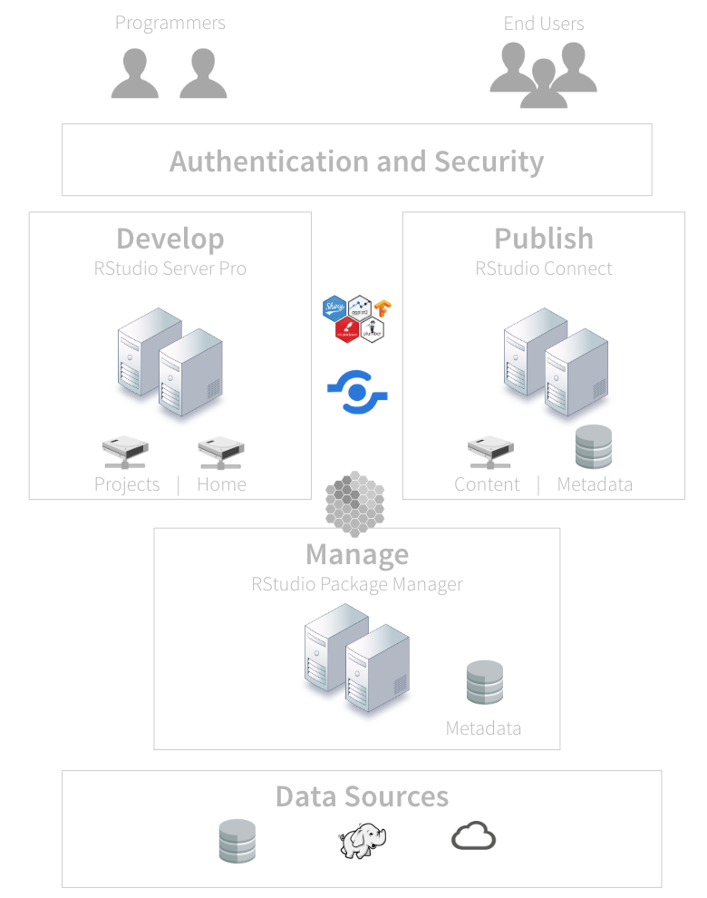
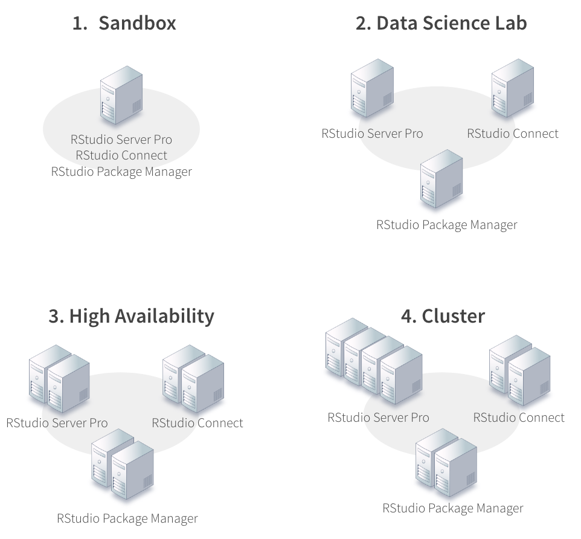

Best Practices for Administering RStudio in Production
Overview
Solutions engineering
We help you integrate RStudio products into your systems
Our team
Where do we hang out?
Who is this webinar for?
R Admin – data scientists who want to do more
R Evangelists
IT/Ops
Anyone who wants to try RStudio professional products
RStudio
RStudio empowers individuals to be productive with data science.
- Open source and reproducible research
- APIs and interoperability
- Usability and clear documentation
- Inclusive and collective success
- Creating lasting value for data science
What we do
RStudio builds open source and professional software for data science
Our professional features include things like
- Security
- Authentication
- Load balancing
- Support
RStudio professional products
- RStudio Server Pro
- RStudio Connect
- RStudio Package Manager
What is the relationship between R and RStudio?
We don’t own R, package R, or distribute R
R Core team: 20 members – Zero from RStudio
RStudio products “sit on top of R”
- You standardize on R first
- Install our products second
We assume you have chosen to invest in R
Professional R tooling and integration
Legitimacy
- Recognize R as an analytic standard
Competencies*
- Understand and manage R tooling
Adoption
- Rely on integrated R based solutions
Administering RStudio professional products
People want to know if they are doing things the best way
- R is relatively unknown in most organizations
- No single place to get all the information you need
- Hard to see the forest through the trees
We see a lot of trial and error
- Organizational hurdles
- Resource limitations
Outline
5 Best practices for administering RStudio in production
1. Keep your system up to date
Modern tools
- Operating system
- Browsers
C++11 compiler
- R packages on Linux must be compiled
Internet access
- R packages
2. Support multiple versions of R
Why do you want to run multiple versions of R?
- Manage upgrades of R
- Test code on a variety of R versions and distributions
- Support projects that depend on various versions of R
- All products support multiple versions of R
Upgrade yearly (version 3.1.0+)
Build R from source
- Multiple versions of R side by side requires you build R from source
- Not hard to do (i.e. config/make/make install)
- Instructions
3. Organize your R packages
R Packages rule the nest.
- Packages will drive your R version, Linux dependencies, and even your operating system
- Data scientists will want access to their most beloved packages
Managing packages for a single user is easy.
- Managing packages for an entire platform is hard
RStudio Package Manager solves several problems
- Disconnected, air-gapped environments
- Curate packages into multiple repositories for security and control
- Share internal packages
4. Use root privileges
The group in your organization that installs, configures, and manages R and RStudio will need root privileges
RStudio products
- Installs require root privileges
- Runs require root privileges
- RStudio Server Pro runs as the root user in order to create new R sessions on behalf of its users
- RStudio Connect runs as the root user in order to isolate applications and processes
R
- System-wide installations of R on Linux often involve root also
5. Securely manage your users
R programmers - RStudio Server Pro
- They will need access to R, file shares, databases, and probably many other sensitive systems.
- R processes run as the user under a local account
End users - RStudio Connect
- End users consume apps and reports.
- R Processes typically run under a service account
Authentication
Your organization
- Probably has strong opinions on how to authenticate users
- This space is only getting more fragmented not less
- LDAP, Active Directory, PAM, OAuth, Okta, Duo, Auth0, etc.
Proxied authentication
- If we don’t support your specific system, then you can use our proxied authentication
- With proxied auth, users do not log in through RStudio but through a proxy that you set up
Supported Auth Methods
RStudio Server Pro
- PAM (LDAP and Active Directory)
- OAuth 2.0 using Google Apps
- Proxied authentication
RStudio Connect
- LDAP and Active Directory
- OAuth 2.0 using Google Apps
- PAM
- SAML [Beta]
- Proxied authentication
Recommendations (your Happy path)
1. Keep your operating systems and browsers up to date
2. Plan to support multiple versions of R by building R from source
3. Organize your R packages for reliability and consistency
4. Use root privileges to install and run RStudio products
5. Securely manage your R programmers and end users
Getting Started
Tooling
RStudio makes software tools that are designed to work together
- Our R packages and products work together
- There are many ways to assemble our tools
- But it will be up to you to decide how to do it
- Your configuration depends on what does data science means to your organization
Our goal is to make it easy to install and configure all of our products
Solutions
Data science lab
Application factories (Dev/Test/Prod)
On premises, cloud, hybrid cloud
Single server or a multi-departmental deployment
Crawl, walk, run strategies
Architecture

Server Setup

Recipes
Overview
- List of ingredients that make up your platform
- Helps you organize and automate your work
- And are unique to your organization
Structure
- Most of your code will be for Linux, R, and R packages
- A small part of your code will be for installation
- If you’ve installed R properly, installation is usually easy
- The rest will be configuration
Infrastructure as code
Organize your recipes so that can manage your platform
- Configuration management tools for the R admin
- Ansible, Chef, Puppet, CodeDeploy, SaltStack, etc.
- Sandbox
What if I’ve never used these products?
RStudio Quickstart
Overview
- A virtual machine that runs on your desktop
- Includes all our professional products
- And includes pre built assets for you to explore and demonstrate to others
Motivation
- Experience RStudio professional products
- Free and easy
Summary
The happy path
- Keep your operating system and browser up to date
- Support multiple versions of R by building R from source
- Make sure you have easy access to R packages
- Install products as root
- Use a supported authentication system
How to get started
- Recipes and checklists
- Crawl/Walk/Run strategies
- RStudio QuickStart
Summary
Connecting with solutions engineering
References
Administration of Pro Products
Professional R Tooling and Integration
RStudio Professional Product Requirements